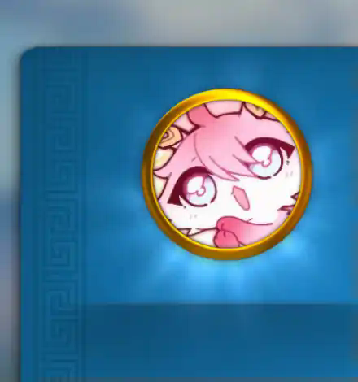
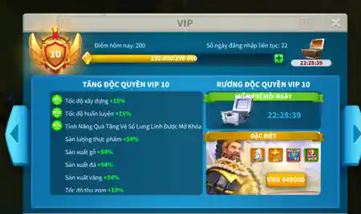
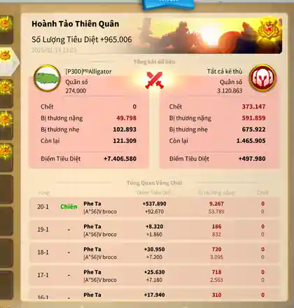

About This Collection
Gaming is more than entertainment for me. It encourages me to study systems, compare different strategies, manage limited resources, and understand how small design choices can change a player's experience.
Honkai: Star Rail represents my interest in character building, while Rise of Kingdoms represents long-term planning and teamwork. Together, these games connect naturally with my goal of learning software engineering and eventually creating interactive projects of my own.
My Rise of Kingdoms Progress
In Rise of Kingdoms, I develop a city, train armies, manage resources, choose commanders, and work with an alliance. The screenshots below record several milestones from my account, including the parrot avatar unlocked after investing about US$50, my governor profile, reaching VIP 10 after 22 consecutive login days, and the largest battle report I have saved.





